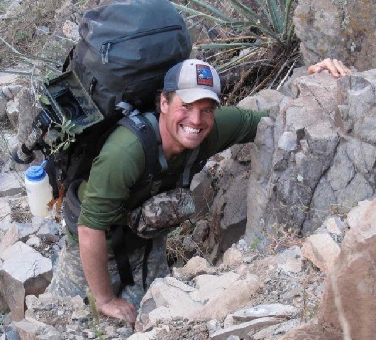

Morgan Fallon
10 years on the road as Bourdain's DP/director (60 shows, 50 countries, 7 continents); 3-hour Tim Ferriss interview (#597, May 2022) where he credits his craft standards to apprenticing under Michael Mann and calls the 'West Virginia' episode his proudest work — going in without condescension and letting people be fully human, almost exactly The Human Element's thesis.
He IS the Parts Unknown field craft: a decade of engineered scenes, character access, and cinematic verite at travel-doc pace with Bourdain, then proved he can run host-driven geopolitical/social series (United Shades, the Ferguson CNN series) at showrunner level. Bridges both halves of the gap — episode architecture and senior field producing — and knows how to build an episode around a host's presence in a place. Likely just wrapped and between projects.
Showran 'Craig Ferguson: American on Purpose' (CNN Original, finished airing July 2026) — likely just wrapped and may be between projects. Also EP on 'Sneaker Wars' (Hulu/Disney+, Sept 2025) and 'Hunting History with Steven Rinella' (History, Jan 2025).
The way in: Top hire target (showrunner / directing EP). Works project-to-project. Approach directly or via the Tim Ferriss-orbit warm intro; Search and Destroy handles commercial representation only.
imdb.com · televisionacademy.com · searchanddestroymedia.com